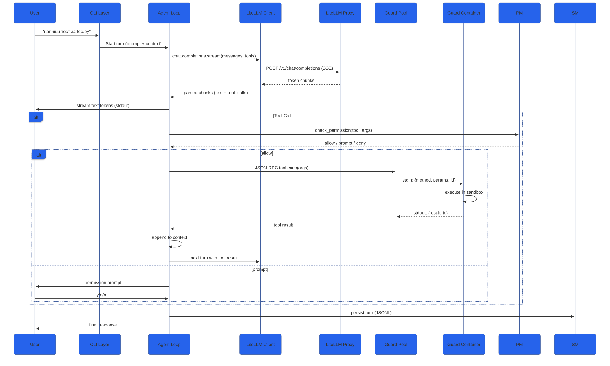
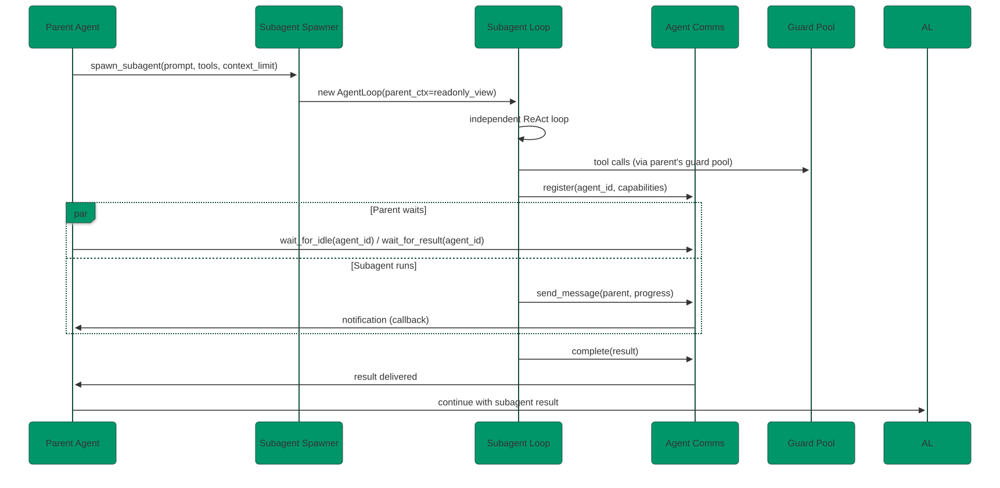
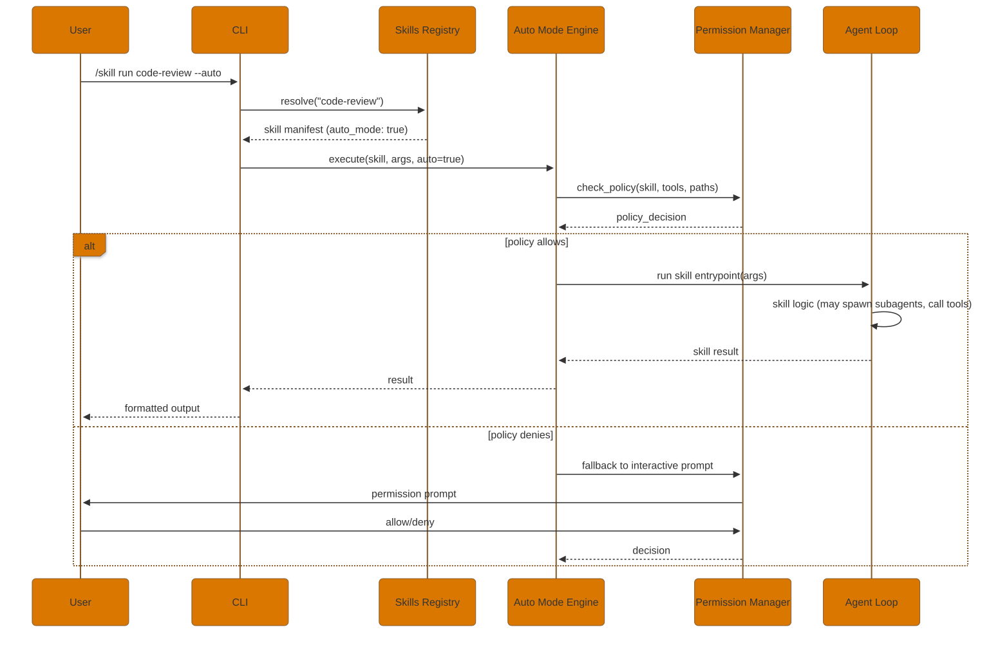

1. High-Level System Architecture
Runtime е изграден от 4 основни слоя, които комуникират през добре дефинирани интерфейси. Всичко работи в един процес (host) освен Docker Guard, който е изолиран контейнер.

Дата: 2026-10-31 | Версия: 1.0 | Статус: За ревю и имплементация
Runtime е изграден от 4 основни слоя, които комуникират през добре дефинирани интерфейси. Всичко работи в един процес (host) освен Docker Guard, който е изолиран контейнер.
python -m runtime или runtime (console_scripts). Аргументи: subcommands, flags, positional prompt.~/.config/runtime/history), Ctrl+C handling.~/.config/runtime/config.yaml > defaults. Schema валидация чрез yaml_lite./namespace:command.while not done: think → act → observe. Максимум стъпки конфигурируемо (MAX_STEPS).Ctrl+C → сигнал към guard за abort.thinking blocks (Anthropic format), се показват в статус линията.POST {base_url}/v1/chat/completions с OpenAI format.Authorization: Bearer {api_key} от config/env/keystore.Accept: text/event-stream, парсване на SSE data: линии чрез kikolib.sse.tools array + tool_choice. Response parsing: tool_calls → internal format.kikolib.retry.RetryPolicy за 429, 5xx, timeouts. Exponential backoff + jitter.model name.bash.exec, fs.read, fs.write, fs.edit, fs.list, fs.glob, fs.grep, net.fetch.python:3.11-slim + kikolib + runtime tools код. Multi-stage build за размер.send_message(agent_id, content), broadcast(content), shared_context (immutable view на parent history).notify_when_idle pattern.{type, timestamp, data}. Checkpoint на всеки N стъпки. Resume от последния checkpoint.name: string
version: semver
description: string
entrypoint: "module:function"
schema: JSONSchema # args validation
hooks:
- event: "pre_tool_call"
handler: "module:hook_fn"
permissions:
- tool: "bash"
pattern: "readonly"
auto_mode: false
depends: ["other-skill@^1.0"]install → fetch → validate → link. Dependency resolution (semver).allow(auto_mode_skills, tools, paths). Default: deny. Configurable per skill/tool/path.skills/builtin/{name}/skill.yaml + implementation. Bundled в package.plan (Opus), research (Sonnet), implement (Sonnet), test-gen (LLM), test-fix (Haiku), review (Sonnet).# Research\n...\n# Task\n....


runtime/
├── __main__.py # Entry point
├── __init__.py
├── cli.py # Argument parsing, readline
├── config.py # Config loading (yaml_lite + dotenv)
├── commands.py # Slash command registry
├── kikolib/ # Copied from ~/kiko/kiko/kikolib/
│ ├── __init__.py
│ ├── http_client.py
│ ├── keystore.py
│ ├── factory.py
│ ├── retry.py
│ ├── posix_utils.py
│ ├── server.py
│ ├── yaml_lite.py
│ ├── dotenv.py
│ ├── tokens.py
│ └── sse.py
├── llm/
│ ├── __init__.py
│ └── client.py # LiteLLM OpenAI-compatible wrapper
├── agent/
│ ├── __init__.py
│ ├── loop.py # ReAct loop
│ ├── streaming.py # SSE handling, token streaming
│ ├── subagent.py # Subagent spawning
│ ├── comms.py # Inter-agent messaging
│ ├── background.py # Background task scheduler
│ └── workflow.py # Orchestrator workflow engine
├── session.py # Session persistence (JSONL)
├── permissions.py # Permission manager
├── hooks.py # Hooks engine
├── tools/
│ ├── __init__.py
│ ├── base.py # Tool base class, schema
│ ├── fileops.py # Read/Write/Edit/List/Glob/Grep
│ ├── bash.py # Bash via Guard RPC
│ ├── taskspawn.py # Subagent launcher tool
│ ├── websearch.py # DuckDuckGo + readability
│ └── mcp.py # MCP client (stdio/SSE)
├── skills/
│ ├── __init__.py
│ ├── schema.yaml # Skill YAML schema
│ ├── registry.py # Local/remote registry
│ ├── auto_mode.py # Policy engine
│ ├── loader.py # Dynamic import
│ └── builtin/
│ ├── code-review/
│ ├── simplify/
│ ├── test-gen/
│ ├── doc-gen/
│ ├── security-review/
│ ├── fewer-permission-prompts/
│ ├── plan/
│ └── research/
├── mcp/
│ ├── __init__.py
│ └── client.py # MCP client implementation
├── ui/
│ ├── __init__.py
│ ├── statusline.py # Configurable status line
│ └── formatting.py # ANSI, markdown, diff rendering
├── guard/
│ ├── entrypoint.py # JSON-RPC server (stdio)
│ ├── handlers/
│ │ ├── __init__.py
│ │ ├── bash.py
│ │ ├── fs.py
│ │ └── net.py
│ └── policy.py # Network/fs policies
├── utils/
│ ├── __init__.py
│ ├── logging.py
│ └── i18n.py # Bulgarian messages
└── workflow/
├── __init__.py
└── engine.py # Pipeline executor
guard/
├── Dockerfile
├── docker-compose.yml
├── .dockerignore
└── requirements.txt # Empty (stdlib only)
ocs/
├── 01-research.html
├── 02-plan.html
├── 03-architecture.html
└── assets/
tests/
├── unit/
├── integration/
└── benchmarks/
docs/
├── user-guide.bg.md
├── user-guide.en.md
├── developer-guide.md
├── skills-authoring.md
└── architecture.md
man/
└── runtime.1
completion/
└── runtime.bash
pyproject.toml
README.md
LICENSE
# ~/.config/runtime/config.yaml
liteLLM:
base_url: "http://localhost:4000"
api_key: "${LITELLM_API_KEY}" # resolved from env or keystore
model: "gpt-4o"
timeout: 60
max_retries: 5
extra_headers: {}
docker_guard:
enabled: true
image: "runtime/guard:latest"
cpus: "2.0"
memory: "4g"
pids_limit: 100
network_mode: "none" # or "bridge" with policy
read_only_rootfs: true
workspace_mount: "/workspace"
permissions:
default_mode: "ask" # ask | allow | deny
allowlist:
- tool: "fileops.read"
paths: ["**"]
- tool: "bash"
patterns: ["ls *", "cat *", "grep *"]
denylist:
- tool: "bash"
patterns: ["rm -rf *", "sudo *", "dd *"]
persist_decisions: true
skills:
paths:
- "~/.config/runtime/skills"
- "./.runtime/skills"
auto_install: false
trusted_publishers: []
hooks:
pre_tool_call: []
post_tool_call: []
pre_agent_spawn: []
post_agent_spawn: []
session_start: []
session_end: []
error: []
ui:
language: "bg"
statusline_format: "{model} | {tokens} | {cost} | {session_time} | {agent_tree}"
colors: true
markdown_render: true
syntax_highlight: true
logging:
level: "INFO"
file: "~/.config/runtime/runtime.log"
max_size_mb: 10
max_files: 5
# Request (Host → Guard)
{"jsonrpc": "2.0", "id": 1, "method": "bash.exec", "params": {"command": "ls -la", "timeout": 30, "cwd": "/workspace", "env": {}}}
# Response (Guard → Host)
{"jsonrpc": "2.0", "id": 1, "result": {"exit_code": 0, "stdout": "...", "stderr": "", "duration_ms": 45}}
# Error Response
{"jsonrpc": "2.0", "id": 1, "error": {"code": -32603, "message": "timeout", "data": {"timeout": 30}}}
# Notification (Guard → Host, async)
{"jsonrpc": "2.0", "method": "guard.log", "params": {"level": "info", "message": "started"}}
# Methods:
# - bash.exec {command, timeout, cwd, env}
# - fs.read {path, encoding}
# - fs.write {path, content, mode}
# - fs.edit {path, old_str, new_str, replace_all}
# - fs.list {path, recursive}
# - fs.glob {pattern, root}
# - fs.grep {pattern, path, include, exclude}
# - net.fetch {url, method, headers, body, timeout} # only if network policy allows
| Layer | Protection | Mechanism |
|---|---|---|
| Host Process | No direct syscalls | Всички I/O през Guard RPC |
| Guard Container | Filesystem isolation | chroot + read-only mounts + workspace RW only |
| Guard Container | Network isolation | network_mode=none / egress policy (allowlist domains) |
| Guard Container | Resource limits | cgroups: CPU, memory, pids, disk quota |
| Guard Container | No privilege escalation | user namespace, no new privs, drop all caps |
| Permissions | Tool-level gates | Allowlist/denylist + interactive prompt + persist |
| Secrets | API keys | OS keystore (kikolib.keystore) + env vars, never in logs |
| Skills | Supply chain | Checksum verification, signed indexes, trusted publishers |

| Extension Point | Mechanism | Example |
|---|---|---|
| New Tool | Subclass BaseTool, register в tools/__init__.py | Database tool, Kubernetes tool |
| New Skill | Add skill.yaml в skills/builtin/ или remote index | Migration generator, API client generator |
| New Slash Command | Decorator @command("/my:cmd") в skill или plugin | /db:migrate, /k8s:deploy |
| New Hook | Register в config.yaml под hooks.* | Audit log, metrics push, notification |
| New LLM Provider | Implement LLMClient protocol, register в factory | Local llama.cpp, custom proxy |
| New Guard Handler | Add handler в guard/handlers/, register в entrypoint | Docker exec, WASM sandbox |
| UI Theme | Config ui.colors + ANSI templates | Dracula, Solarized, High contrast |